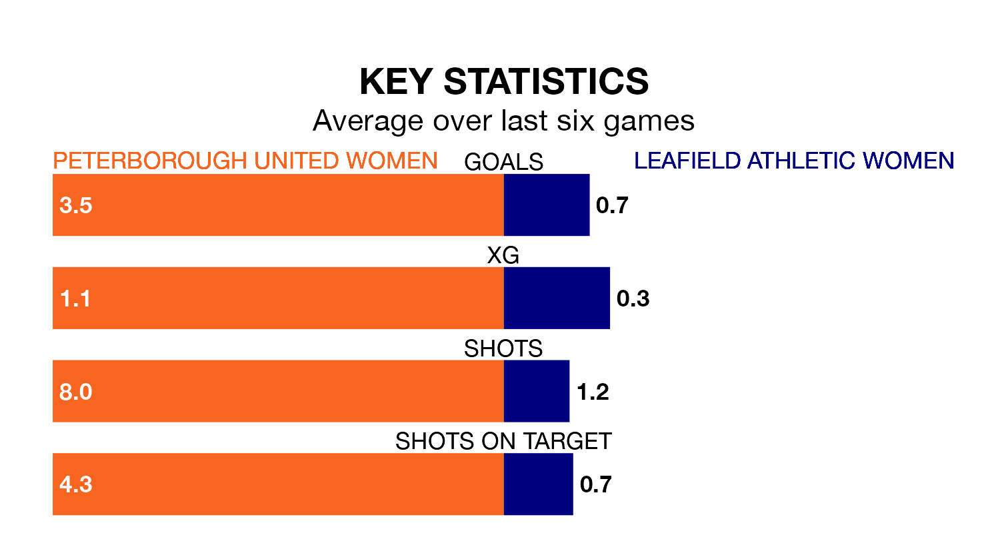

Relegation candidates Leafield Athletic Women face a challenge away against high-flying Peterborough United Women on Sunday.
Leafield Athletic Women are rooted to the bottom of the Women's National League Division One – Midlands table, and have picked up just two wins and six draws in their 20 games to date.
Peterborough United, meanwhile, are third in the standings with 43 points, having won 14 and drawn one, and are five points behind table-toppers Sporting Khalsa Women.
With 57 goals in 20 games so far this season, Peterborough United are the league's second-highest scorers with 2.9 goals per game. And they are conceding fewer than average, letting in 34 goals at a rate of 1.7 per game.
Leafield Athletic, meanwhile, are below average scorers, with 0.8 goals per game, compared to a league average of 1.8. They have conceded 2.1 goals per game.
The hosts are in fantastic form in the Women's National League Division One Midlands, with five wins and one loss from their last six games.
With a win and three draws over that period, the away side's form is much worse – they have taken six points from 18, compared to Peterborough United's 15.
In the last five years, Peterborough United and Leafield Athletic have played each other on five occasions. Peterborough United won three of them and they drew twice.
On average, Peterborough United scored 2.2 goals and Leafield Athletic 0.6 in those matches.
Their last meeting was on February 4, when Peterborough United won 5-1 away.
Peterborough United's last match was on April 14, a 2-1 win against Northampton Town Women.
Leafield Athletic drew 0-0 with Sporting Khalsa Women last time out, on April 21.
Updated: 07:59 (UTC), 26/04/24